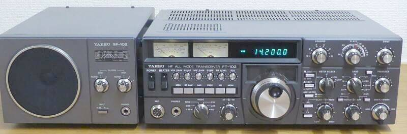
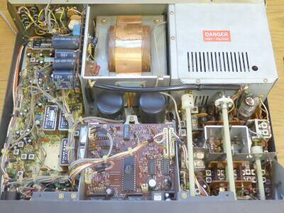
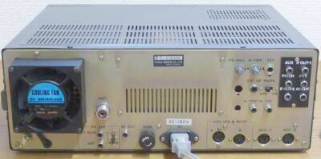
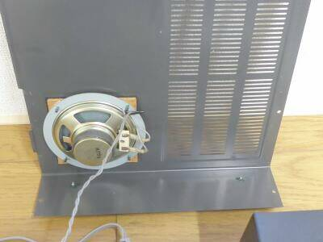
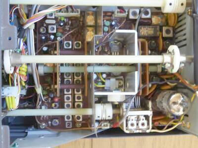
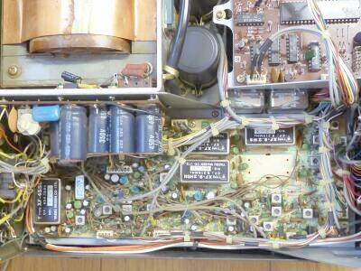
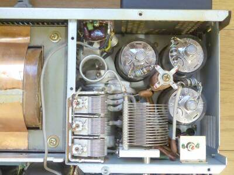

 |
１２９Ｈ ｘ ３６８Ｗ ｘ ３０９Ｗ ｍｍ 約１５Ｋｇ
ＡＣ電源内蔵のＡＣ専用モデルです
ＹＡＳＥＵ最後の真空管を採用したマシンです
ＦＴ-１０１シリーズとは少し毛色が変わって見えます
いわゆる固定局向けの実践機です
|
最後となった１０１シリーズ・・・ＦＴ-１０１ＺＤの発売が、１９７９年 その３年後の１９８２年の登場です
この頃は、第一子が生まれてすぐのころで、趣味の無線とは少し離れていた時期で、発売直後にリアルタイムで活躍していたであろう時期は知りません
本機との出会い・・・・実は、２００～５００ｍＷのエキサイタを５０～１００Ｗへのアンプとして改造してくれと悪友から持ち込まれたＴＳ-５２０と、このＦＴ-１０２、意外や意外 ＴＳ-５２０とはちょっと別物・・・リニアリティの良さと出力の大きさに驚いた出会いでした
ドライバの１２ＢＹ７Ａの入力は広帯域アンプ、ファイナルは６１４６Ｂｘ３本 それもＲＦのＮＦＢがかかっています
ＲＦのＮＦＢといえば、Ｃｏｌｌｉｎｓの十八番というか、Ｃｏｌｌｉｎｓでしかないと思っていたので、これは驚きました
という出会い？から１台入手することにしたのが本機です
|
１６０ｍバンドからＷＡＲＣバンドを含み、１０ｍバンドまでカバーします
ＡＭあるいはＦＭ送信できるオプションがあることも、ちょっと興味深いところです（ＡＭ受信はオプション無しで可能）
ＶＦＯは、ＰＬＬによる周波数制御方式を採用、高安定を得ています
|
|
 |
上カバーを外し、フロント側から見るとこんな感じです |
|  |
リアビューです
意外とシンプルかと・・・・ |
 |
大型のスピーカーが、上カバーに取り付けられています |
 |
ＲＦ段です
Ｃｏｌｌｉｎｓ以外の製品で、ＲＦ-ＮＦＢをかけた製品を初めて目にしました
ドライバ１２ＢＹ７Ａの入力は、広帯域アンプ
従って同調ＶＣは、プレート側のみ |
 |
フロントから見てシャーシ上面左半分です
ＩＦフィルタが多くセットされています
ＡＭフィルタ以外全て・・・かな
標準装備は、８．２ＭＨｚＳＳＢ用２．７ＫＨｚ幅/８ポールと、ＣＦＭ-４５５-Ｊ１（２．７ＫＨｚ幅/９素子らしい）のみ
オプションのクリスタル・フィルタ/８ポールの中から、以下の３個のフィルタが追加されています
・４５５ＫＨｚ ５００Ｈｚ
・８．２ＭＨｚ ６００Ｈｚ と、１．８ＫＨｚ
これらを組み合わせて、より選択度を高めた運用を可能とします
|
 |
こちらはファイナル部分
シールド板を取り外して写しています
６１４６Ｂを３本使用
中和用トリマが、上ケースを取るだけで調整できるように用意されているのは、無線をよく知ったメーカーならこそ（シールド板に調整棒を差し込む穴が開いています） |
|
余裕で１００Ｗの出力が得られますし、余裕の３パラかつＲＦ-ＮＦＢの効果で、第３次混変調積歪－４０ｄｂ以下と仕様に記されています
受信についても、ＲＦ部ＴＯＰのジャンクションＦＥＴには、２４Ｖをかけ、飽和レベルを引き上げるなど、実践的な設計がしてありますし、Mix直後にはルーフィング・フィルタ（２０KHｚ幅）が採用されています
混信対策についても、ＩＦシフト、ワイズコントロールを組み合わせ、CW用にはノッチ・フィルターやＡＦピーク・フィルタも用意されています
作り方も含め、ここまでの主力であった１０１系とは全く異なった設計といえます
真空管時代の最後にふさわしいマシンかもしれません |
|
|
後日談
ＮＦＢのかかったＲＦ段 その直線性が良いことに目を付け、外部から１Ｗ程度の入力で４０～５０Ｗ程度の出力が得られないか、試してみてほしいという相談というか、同じＦＴ-１０２の持ち込みがありました
割と簡単な改造で、なかなかの好結果を得ることができました
具体的には、１W入力で１２０W程度の出力が得られました（依頼者曰く、４０Ｗ程度の出力までは、理想的なツートーン波形だと・・・）
ＡＭ／ＦＭユニット（オプション設定）
偶然入手出来たので組み込むことにしました
ＶＦＯユニットの下に、取り付けスペースが用意されています |
| 2021.09 |